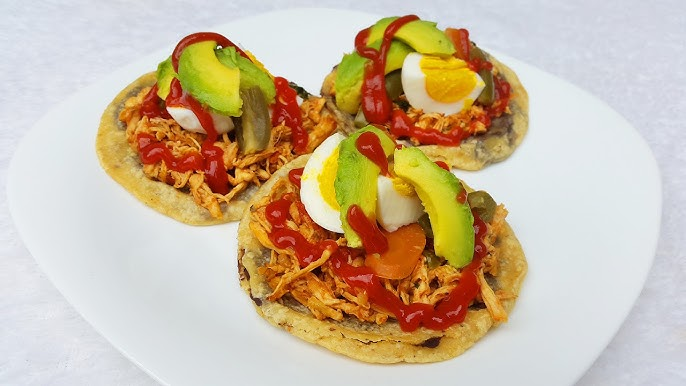
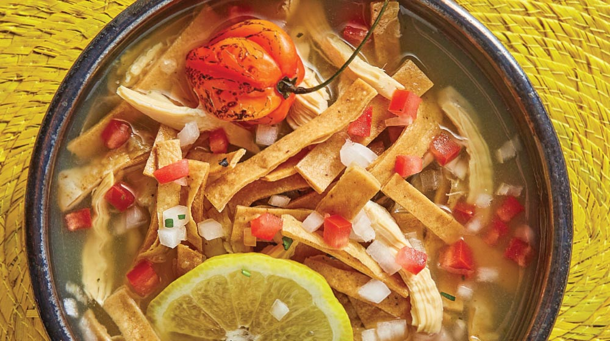

Comidas tipicas
|

Panuchos Es uno de los platillos más representativos. Se prepara con carne de cerdo marinada en achiote, jugo de naranja agria y especias, envuelta en hojas de plátano y cocida lentamente (tradicionalmente en un horno bajo tierra). |

Cochinita pibil Son tortillas rellenas de frijol refrito, fritas y cubiertas con carne (generalmente pollo o cochinita), lechuga, cebolla morada encurtida, aguacate y salsa. |

sopa de lima Una sopa clara y aromática hecha con caldo de pollo, tiras de tortilla frita y jugo de lima, acompañada de trozos de pollo y a veces tomate y cebolla. |